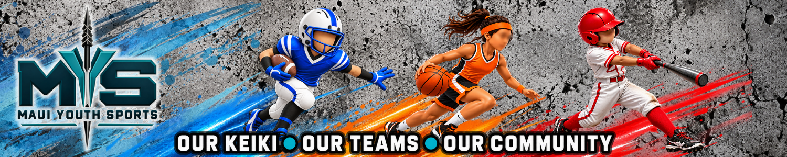
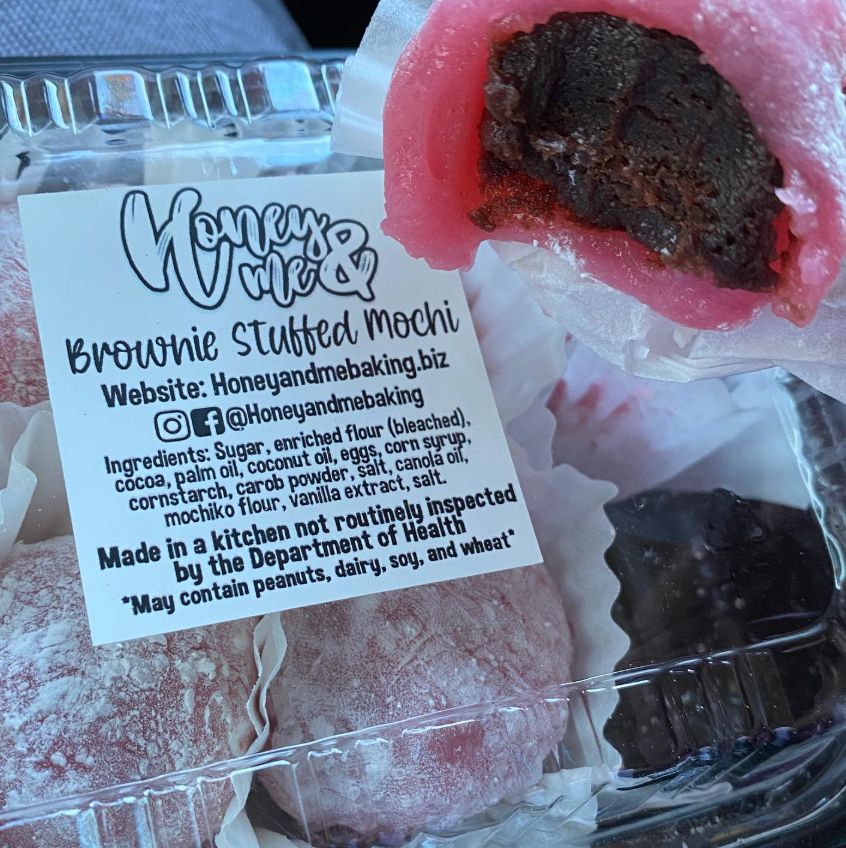

Weekend roundup: KS Maui football wins; Seabury Hall and Molokaʻi take volleyball matches
Friday’s published finals include KS Maui’s 59–0 football win and volleyball victories for Seabury Hall and Molokaʻi.

Catch up on recent Maui County youth sports results. Visit Scores for game results, recent matchups, and updates from around the islands.
Watch: Maui Prep–Seabury Hall volleyball highlights
View All Scores →
Hawaiʻi DOE public schools in Maui County closed September 25; school-sponsored activities were canceled through that weekend. This historical cancellation is not a current closure.
2026-09-27 · Maui County
Free afterschool program for ages 11–17. Surfing or hiking, conditions permitting. Transportation was offered from Central Maui pickup points. This was the final scheduled September session.
2026-09-30
Soccer introduction through movement, ball skills and guided games. Dates are published as estimates; confirm holiday exceptions before attending.
2026-10-19 — 2026-11-30 · Mondays/Wednesdays 5:15–6 p.m. HST; estimated program dates · Central Maui Regional Sports Complex · Maui Lani
Developmental soccer program. The sponsor labels October 29–December 22 as estimated dates; those endpoints are Thursday/Tuesday despite the stated Monday/Wednesday training days.
2026-10-29 — 2026-12-22 · Page lists Mondays/Wednesdays 5–6 p.m. HST; exact sessions require confirmation
Community running event. Food donations support the Maui Food Bank. This is a road-running/community race, separate from school MIL competition.
2026-11-26 · 7:30 a.m. HST · Keokea Park, Kula
Holiday community run and a separate short race for younger keiki. This is separate from MIL competition.
2026-12-20 · 8 a.m. HST · Kanaha Beach Park, Kahului
No single-day event is listed for this date. See Schedules for programs and source notes.
Friday’s published finals include KS Maui’s 59–0 football win and volleyball victories for Seabury Hall and Molokaʻi.
HSJGA lists a junior skills clinic at The Dunes at Maui Lani on Wednesday, Oct. 7, from 4 to 5:30 p.m.
Maui Sports Leagues lists late registration through Oct. 24 at $140, with the fall season scheduled to begin Oct. 17.
Kāʻanapali Golf Courses lists a complimentary clinic with the UH men’s golf team on Tuesday, Oct. 27, from 3 to 4 p.m.
Send us a score, schedule update, highlight, photo, video or community announcement. Submissions are reviewed before publishing.
Choose what you want to send us.
Submissions are reviewed before anything is published.